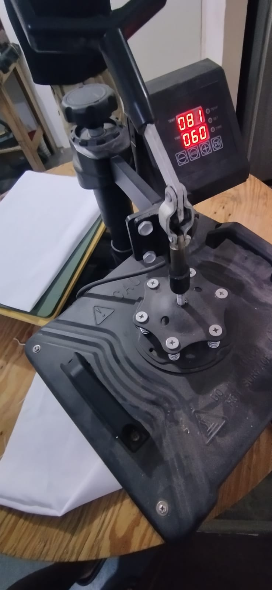
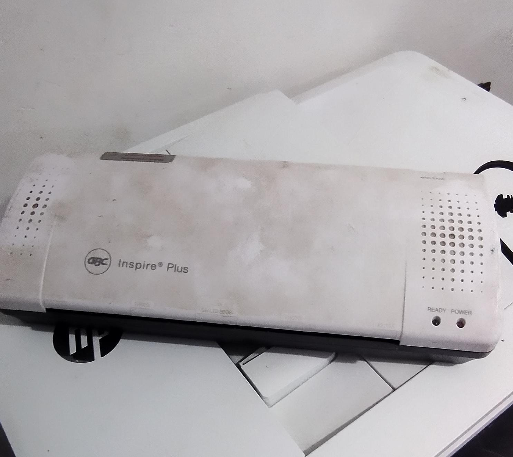
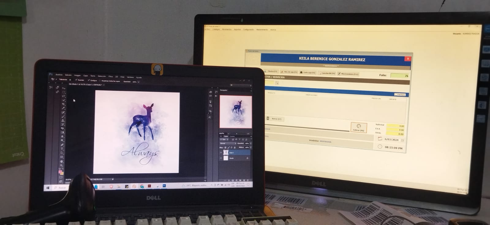
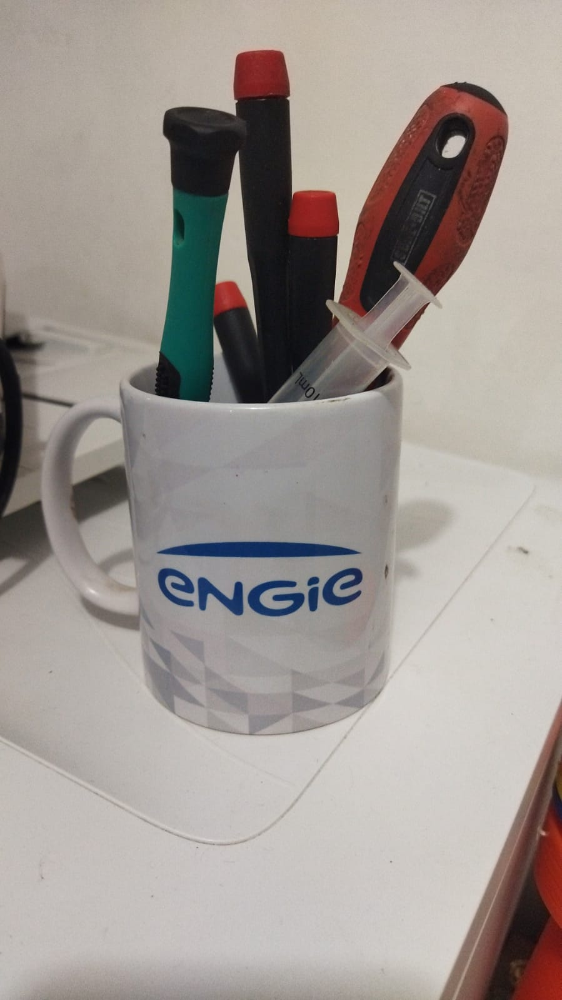
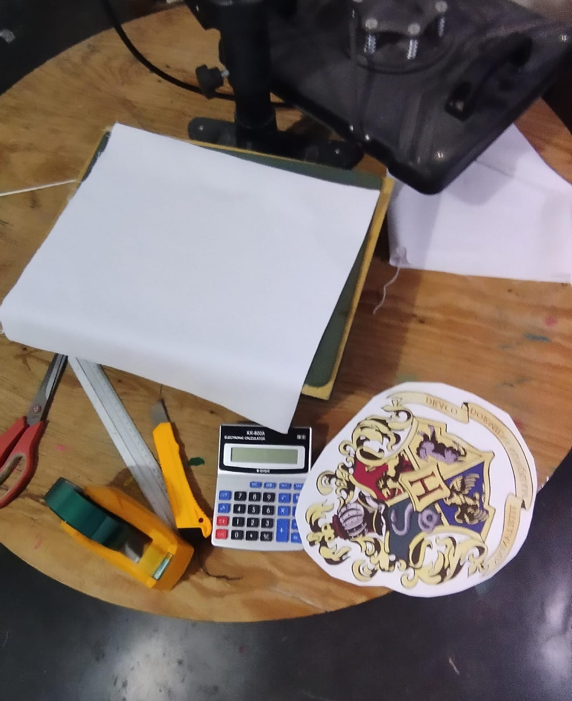
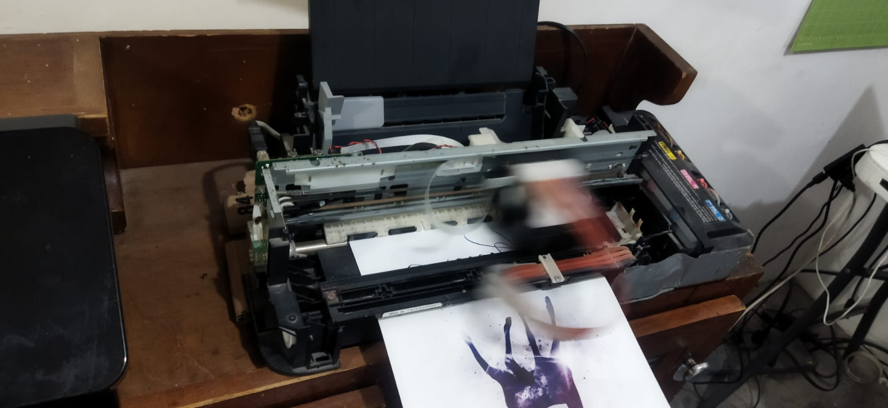
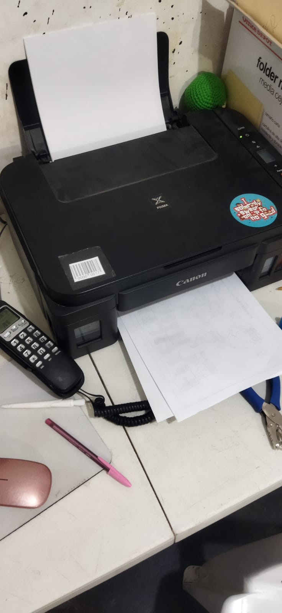
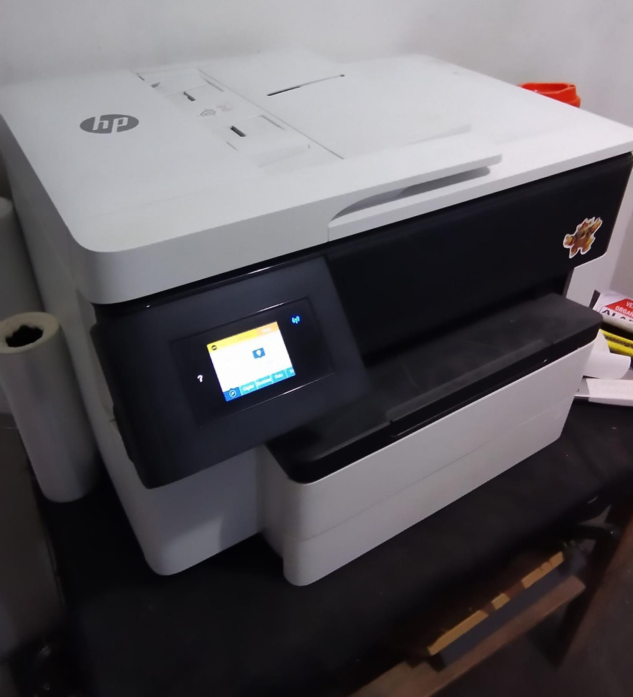
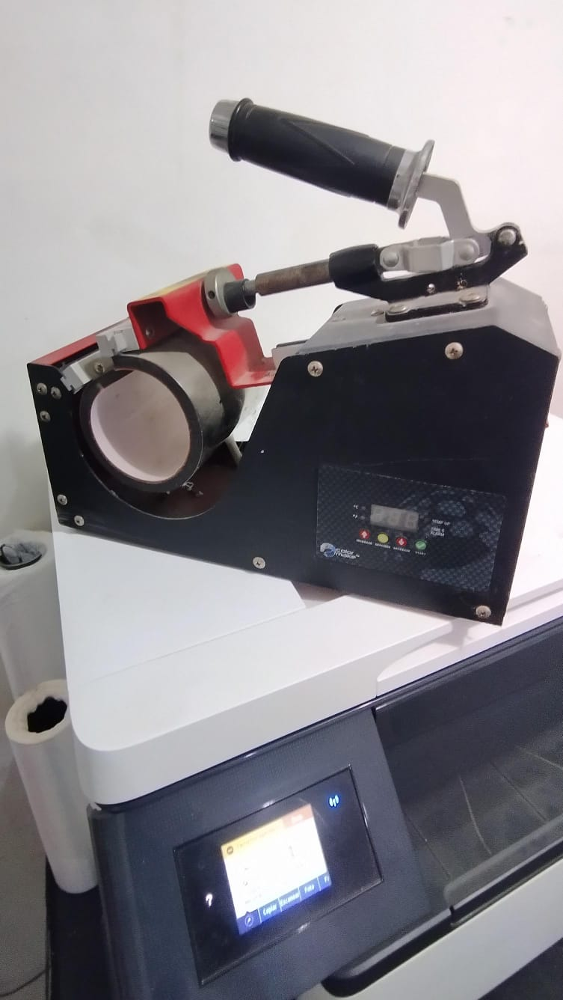

Maquinaria de estampado
Presentamos nuestra maquina de estampados de playeras y telas
tan fundamental que es la maquina mas usada y que fue la que
empezo todo este proyecto ya que sin ella no podriamos estar
donde hoy estamos, nos sirve para estampar cualquier diseño
ya que dispone con una resistencia la cual calienta la cabeza
de la maquina que con presion nos ayuda a estampar los diseños.

Enmicadora
presentamos nuestra enmicadora la cual nos ayuda
a enmicar tarjetas, credenciales, gafetes y entre
otras, al encenderla esta se calienta y con el calor
que genera esta le facilita el poder moldear el plastico
a su forma de enmicado, esto nos favorece en tener un
acabado mas profesional en este tipo de productos.

Maquina PC
Nuestra pc para hacer diseños, manejar redes sociales, ediciones
etc. En esta maquina se centra todo el trabajo ya que con esta
podemos crear diseños conforme nos los vayan pidiendo aparte de
que la utilizamos para manejar las redes sociales que es super
importante ya que sin ellas no podemos trabajar, esta conectada
a un monitor para que facilite la vista a mas grande escala y asi
tener una mejora para trabajar mejor.

Destornilladores especiales
Nuestras herramientas de mantenimiento ya que
el tener bastante maquinaria en largo tiempo
de uso con el tiempo generan fallas por lo tanto
con estas herramientas de destornilladores podemos
darles un mantenimiento para asi mantener en buen
estado nuestra maquinaria y tambien funcionan para
mantenimiento de computadoras.

Estampados
Los estampados son la base fundamental de
esta empresa ya que los clientes buscan
obtener diseños personalizados a su gusto
y que lo puedan vestir entonces nosotros nos
encargamos de estampar sus diseños en ropa a
su gusto para que asi el cliente este satisfecho.

Impresora de sublimación
Con esta maquinaria solemos trabajar para imprimir
nuestros diseños ya que necesitamos de esta
impresora especial para poder usar la impresión
para estampar ya que una impresora normal no nos
sirve para este tipo de trabajos.

Impresora
Pesentamos esta impresora con la que trabajamos
dia a dia para cumplir con las necesidades
de los clientes que necesitan impresiones.

Segunda Impresora
Esta nos sirve para imprimir a gran
calidad y satisfacer a todos los clientes
que necesiten de este producto.

Sumblimador de tazas
Esta maquinaria nos sirve para la personalización
de tazas la cual funciona con calor, se calienta
con una resistencia la cual lo lleva a altas temperaturas
y facilita la sublimacion en el producto.
